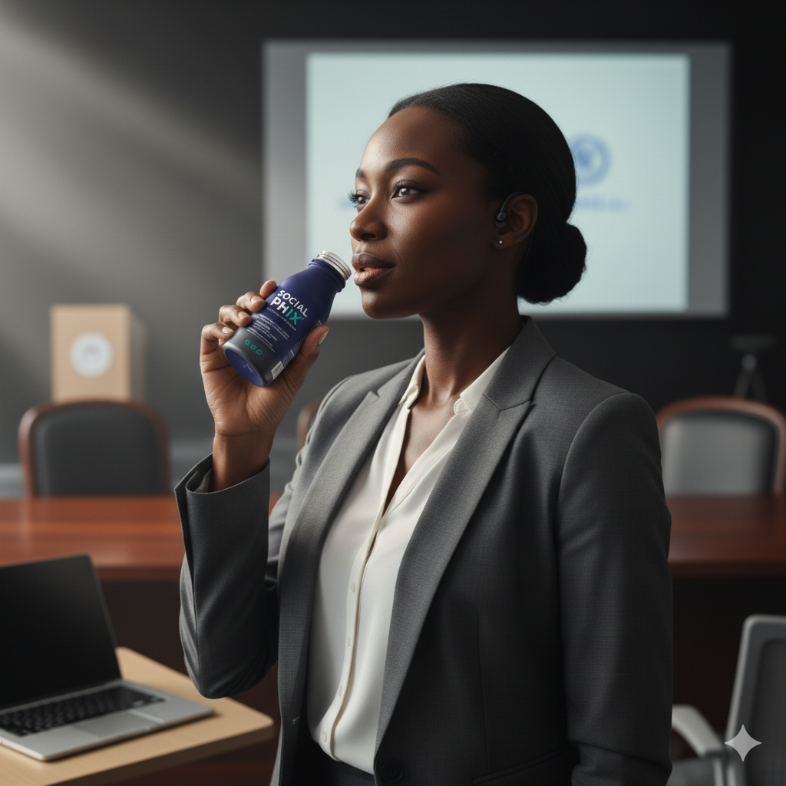
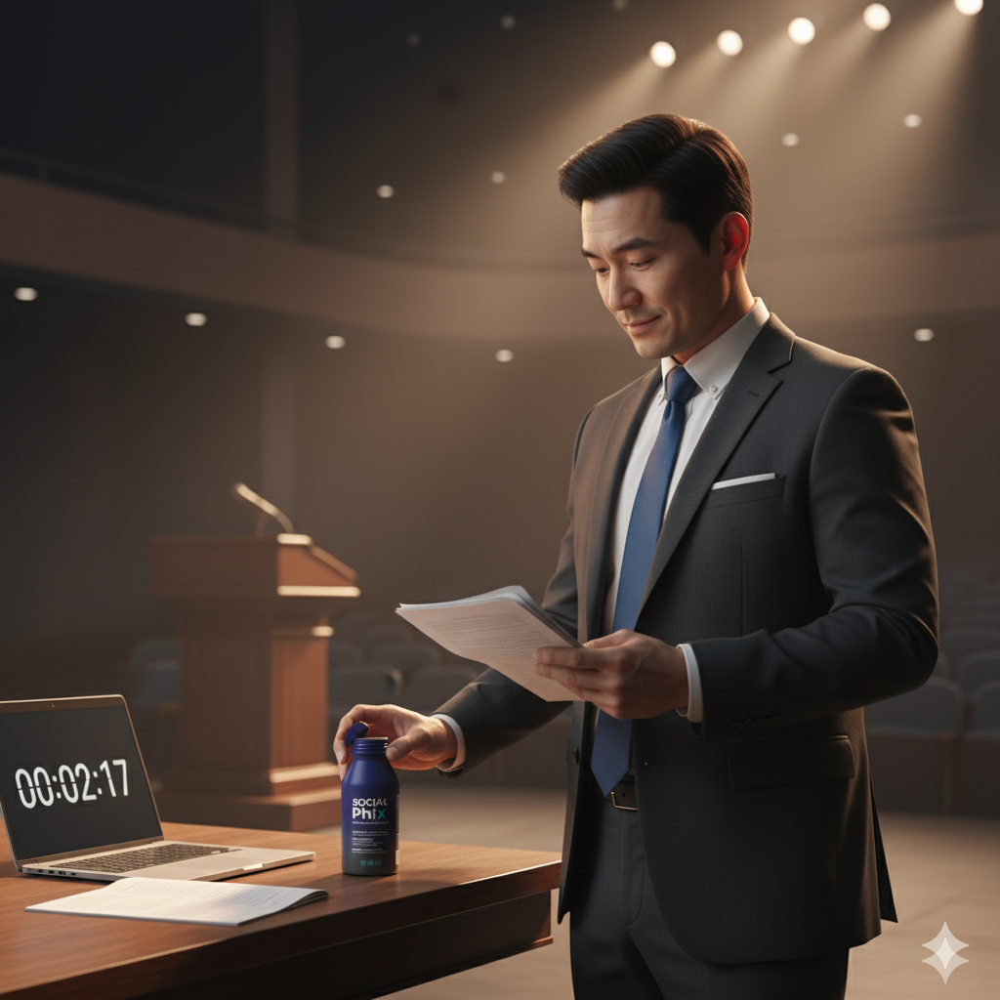

The Social Phix Protocol: When to Take It

1. High-Stakes Professional Events
Need to be sharp and grounded? Take Social Phix 30 minutes before client pitches, board meetings, or crucial job interviews.

2. Social & Networking Gatherings
Enjoy the conversation without the racing thoughts. Perfect for parties, first dates, or connecting with new people at conferences.

3. Public Speaking & Performance
Get clear delivery and a steady voice. Take it before speeches, musical performances, or any time you need to command an audience.